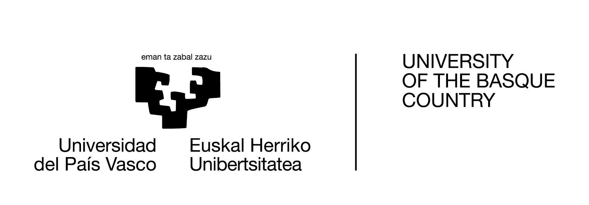

The European Conference on Queueing Theory (ECQT 2028) will take place in Bilbao, Spain, during the week beginning 10 July 2028.
ECQT is an established tradition for members of the queueing theory community in Europe and beyond. Following successful editions in Ghent (2014), Toulouse (2016), Jerusalem (2018), and Reykjavik (2026), the conference will come to Bilbao in 2028. ECQT builds on the tradition of the Madrid Conferences on Queueing Theory (MCQT), originally organized by Jesús Artalejo.
ECQT aims to be a meeting place where scientists and technicians in the field can find a discussion forum to promote research, encourage interaction, and exchange ideas. The conference is open to all trends in queueing theory, including the development of the theory, methodology advances, computational aspects, and applications. The spirit of the conference is to be a queueing event organized from within Europe, but attendees and submissions need not be restricted to Europe.
Researchers who wish to present their work at ECQT 2016 should submit an abstract (for more details, see Instructions for Authors).
Additional information regarding:
will be published on this website as it becomes available.

If you have any questions, don't hesitate to get in touch with us at ecqt2028(at)gmail(dot)com.